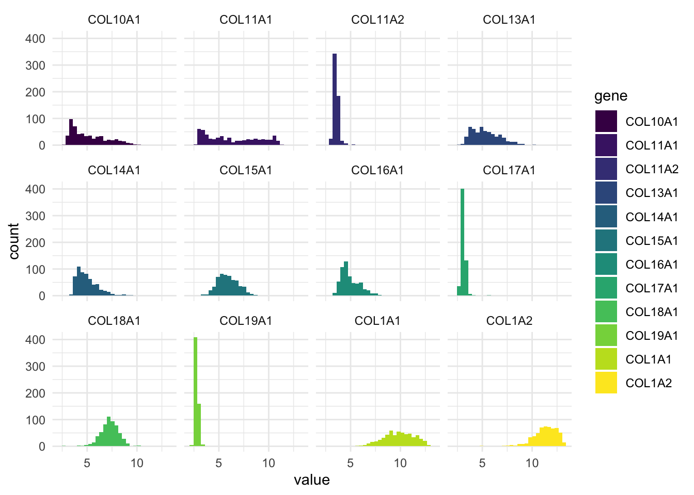

library(readxl)
library(tidyverse)
library(broom)Presentation 2: Advanced Tidyverse
Load packages
Load data
df_tidyverse_join <- read_excel('../data/sales_data.xlsx')Wide format
The data is now in wide format
df_tidyverse_join %>%
group_by(City) %>%
summarize(sum_sales_2020 = sum(sales_2020, na.rm = TRUE)) %>%
ggplot(aes(x = City,
y = sum_sales_2020)) +
geom_col()
We want to make a scatter and line plot over the sales development over the years for each person. Have a look at the data. How would you do this?
head(df_tidyverse_join)# A tibble: 6 × 9
ID Name Age Sex sales_2020 sales_2021 sales_2022 sales_2023 City
<dbl> <chr> <dbl> <chr> <dbl> <dbl> <dbl> <dbl> <chr>
1 1 Alice 25 Female 100 110 120 100 Miami
2 2 Bob 30 Male 200 210 220 230 Miami
3 3 Charlie 22 Male 150 160 170 200 LA
4 4 Sophie 35 Female 300 320 340 250 New Yo…
5 5 Eve 28 Female 250 240 250 270 LA
6 6 Frank NA Male NA 260 270 280 New Yo…Long format
The smart way to do this is to reformat the dataframe such that each person has a line per sales year. This is called the long format. USE CASES FOR LONG AND WIDE FORMAT.
- Make the dataframe wide format like explained above.
df_tidyverse_join_longer <- df_tidyverse_join %>%
pivot_longer(cols = starts_with("sales_2"),
names_to = "year",
values_to = "sales"
)
df_tidyverse_join_longer# A tibble: 40 × 7
ID Name Age Sex City year sales
<dbl> <chr> <dbl> <chr> <chr> <chr> <dbl>
1 1 Alice 25 Female Miami sales_2020 100
2 1 Alice 25 Female Miami sales_2021 110
3 1 Alice 25 Female Miami sales_2022 120
4 1 Alice 25 Female Miami sales_2023 100
5 2 Bob 30 Male Miami sales_2020 200
6 2 Bob 30 Male Miami sales_2021 210
7 2 Bob 30 Male Miami sales_2022 220
8 2 Bob 30 Male Miami sales_2023 230
9 3 Charlie 22 Male LA sales_2020 150
10 3 Charlie 22 Male LA sales_2021 160
# ℹ 30 more rowsTransform the year to integer.
df_tidyverse_join_longer <- df_tidyverse_join_longer %>%
mutate(year = str_remove(year, 'sales_') %>% as.integer(),
year_factor = year %>% as.factor(),
)
df_tidyverse_join_longer# A tibble: 40 × 8
ID Name Age Sex City year sales year_factor
<dbl> <chr> <dbl> <chr> <chr> <int> <dbl> <fct>
1 1 Alice 25 Female Miami 2020 100 2020
2 1 Alice 25 Female Miami 2021 110 2021
3 1 Alice 25 Female Miami 2022 120 2022
4 1 Alice 25 Female Miami 2023 100 2023
5 2 Bob 30 Male Miami 2020 200 2020
6 2 Bob 30 Male Miami 2021 210 2021
7 2 Bob 30 Male Miami 2022 220 2022
8 2 Bob 30 Male Miami 2023 230 2023
9 3 Charlie 22 Male LA 2020 150 2020
10 3 Charlie 22 Male LA 2021 160 2021
# ℹ 30 more rows- Make the plot explain above (scatter and line plot over the sales development over the years for each person). If you are confused, break down the problem: What should be on the x axis? y axis? What kind of geom(s) should be added? Should the plot be stratified using other aesthetics? What can you conclude from the plot.
df_tidyverse_join_longer %>%
ggplot(aes(x = year,
y = sales,
color = Name,
group = Name)) +
geom_point() +
geom_line()Warning: Removed 2 rows containing missing values or values outside the scale range
(`geom_point()`).Warning: Removed 1 row containing missing values or values outside the scale range
(`geom_line()`).
Plot distribution of sales across the years.
df_tidyverse_join_longer %>%
ggplot(aes(x = year,
y = sales)) +
geom_col()Warning: Removed 2 rows containing missing values or values outside the scale range
(`geom_col()`).
df_tidyverse_join_longer %>%
ggplot(aes(x = City,
y = sales,
fill = year_factor)) +
geom_col()Warning: Removed 2 rows containing missing values or values outside the scale range
(`geom_col()`).
Using pivot_wider to get data back to wide format.
df_tidyverse_join_wider <- df_tidyverse_join_longer %>%
select(!year_factor) %>%
pivot_wider(names_from = year,
values_from = sales)
# Same content
df_tidyverse_join# A tibble: 10 × 9
ID Name Age Sex sales_2020 sales_2021 sales_2022 sales_2023 City
<dbl> <chr> <dbl> <chr> <dbl> <dbl> <dbl> <dbl> <chr>
1 1 Alice 25 Female 100 110 120 100 Miami
2 2 Bob 30 Male 200 210 220 230 Miami
3 3 Charlie 22 Male 150 160 170 200 LA
4 4 Sophie 35 Female 300 320 340 250 New Y…
5 5 Eve 28 Female 250 240 250 270 LA
6 6 Frank NA Male NA 260 270 280 New Y…
7 7 Grace 40 Female 400 420 430 450 Chica…
8 8 Hannah 29 Female 500 510 NA 500 Chica…
9 9 Ian 21 Male 450 460 470 480 New Y…
10 10 Jack 33 Male 300 310 320 290 LA df_tidyverse_join_wider# A tibble: 10 × 9
ID Name Age Sex City `2020` `2021` `2022` `2023`
<dbl> <chr> <dbl> <chr> <chr> <dbl> <dbl> <dbl> <dbl>
1 1 Alice 25 Female Miami 100 110 120 100
2 2 Bob 30 Male Miami 200 210 220 230
3 3 Charlie 22 Male LA 150 160 170 200
4 4 Sophie 35 Female New York 300 320 340 250
5 5 Eve 28 Female LA 250 240 250 270
6 6 Frank NA Male New York NA 260 270 280
7 7 Grace 40 Female Chicago 400 420 430 450
8 8 Hannah 29 Female Chicago 500 510 NA 500
9 9 Ian 21 Male New York 450 460 470 480
10 10 Jack 33 Male LA 300 310 320 290Nesting
Avoid redundant information in dataframe by nesting. Group data by Name and nest year and sales into a single column.
df_tidyverse_join_longer_nested <- df_tidyverse_join_longer %>%
group_by(Name) %>%
nest(sales_data = c(year_factor, year, sales)) %>%
ungroup()
df_tidyverse_join_longer_nested# A tibble: 10 × 6
ID Name Age Sex City sales_data
<dbl> <chr> <dbl> <chr> <chr> <list>
1 1 Alice 25 Female Miami <tibble [4 × 3]>
2 2 Bob 30 Male Miami <tibble [4 × 3]>
3 3 Charlie 22 Male LA <tibble [4 × 3]>
4 4 Sophie 35 Female New York <tibble [4 × 3]>
5 5 Eve 28 Female LA <tibble [4 × 3]>
6 6 Frank NA Male New York <tibble [4 × 3]>
7 7 Grace 40 Female Chicago <tibble [4 × 3]>
8 8 Hannah 29 Female Chicago <tibble [4 × 3]>
9 9 Ian 21 Male New York <tibble [4 × 3]>
10 10 Jack 33 Male LA <tibble [4 × 3]>Pull sales data from Bob.
df_tidyverse_join_longer_nested %>%
filter(Name == 'Bob') %>%
pull(sales_data)[[1]]
# A tibble: 4 × 3
year_factor year sales
<fct> <int> <dbl>
1 2020 2020 200
2 2021 2021 210
3 2022 2022 220
4 2023 2023 230Create a model object that models sales across year.
df_tidyverse_join_longer_nested <- df_tidyverse_join_longer_nested %>%
mutate(model_object = map(.x = sales_data,
.f = ~lm(formula = sales ~ year,
data = .x))
)
df_tidyverse_join_longer_nested# A tibble: 10 × 7
ID Name Age Sex City sales_data model_object
<dbl> <chr> <dbl> <chr> <chr> <list> <list>
1 1 Alice 25 Female Miami <tibble [4 × 3]> <lm>
2 2 Bob 30 Male Miami <tibble [4 × 3]> <lm>
3 3 Charlie 22 Male LA <tibble [4 × 3]> <lm>
4 4 Sophie 35 Female New York <tibble [4 × 3]> <lm>
5 5 Eve 28 Female LA <tibble [4 × 3]> <lm>
6 6 Frank NA Male New York <tibble [4 × 3]> <lm>
7 7 Grace 40 Female Chicago <tibble [4 × 3]> <lm>
8 8 Hannah 29 Female Chicago <tibble [4 × 3]> <lm>
9 9 Ian 21 Male New York <tibble [4 × 3]> <lm>
10 10 Jack 33 Male LA <tibble [4 × 3]> <lm> Pull model object from Bob to access the sales trend across the years.
df_tidyverse_join_longer_nested %>%
filter(Name == 'Bob') %>%
pull(model_object) %>%
pluck(1) %>%
tidy(conf.int = TRUE,
conf.level = 0.95)Warning in summary.lm(x): essentially perfect fit: summary may be unreliableWarning in summary.lm(object, ...): essentially perfect fit: summary may be
unreliable# A tibble: 2 × 7
term estimate std.error statistic p.value conf.low conf.high
<chr> <dbl> <dbl> <dbl> <dbl> <dbl> <dbl>
1 (Intercept) -20000 0 -Inf 0 -20000 -20000
2 year 10 0 Inf 0 10 10df_tidyverse_join_longer_nested %>%
filter(Name == 'Sophie') %>%
pull(model_object)[[1]]
Call:
lm(formula = sales ~ year, data = .x)
Coefficients:
(Intercept) year
26582 -13